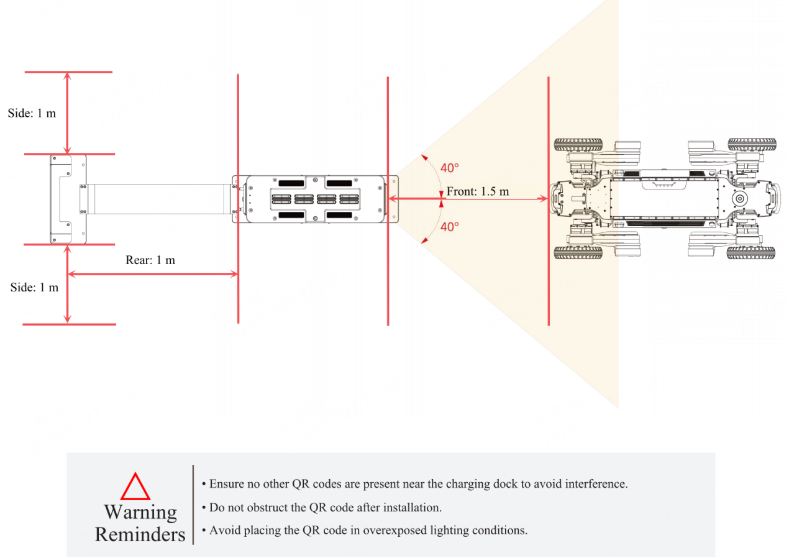

5.2 自主回充说明
版本要求：
rk3588版本为: 0.2.4，Orin NX固件版本为: 0.4.5
使用要求：
需搭配充电桩进行使用，安装说明详见“智元D1 Max自主充电产品说明书”，目前支持"无图回充"，即将四足机器人D1 Max设备正对充电桩，设备头部距离充电桩1.5m左右，确保在相机视野中可完整看到充电桩的二维码。

Deme运行
# Enter the C++ demo directory
cd example
# Create a build directory
mkdir build && cd build
# Configure and build the project
cmake ..
make -j6
# Run the demo executable
./control 192.168.168.168 8081 192.168.168.100 10010